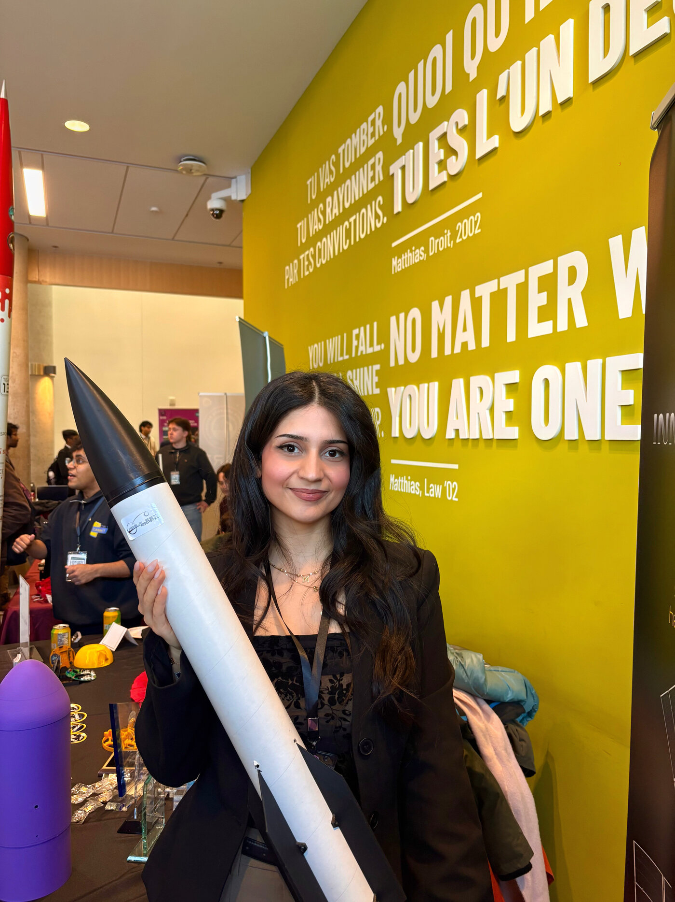
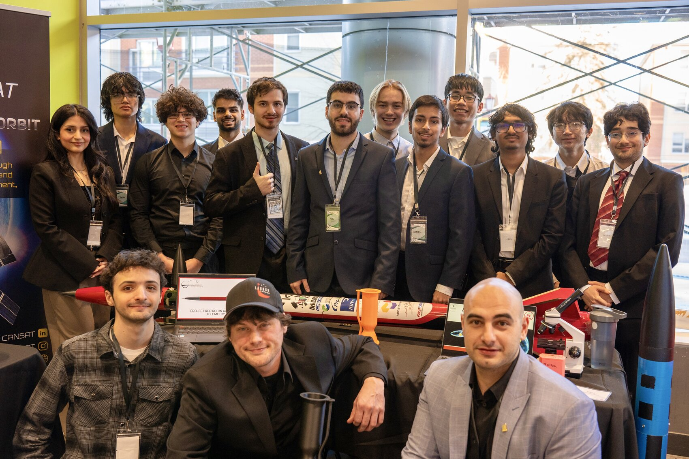
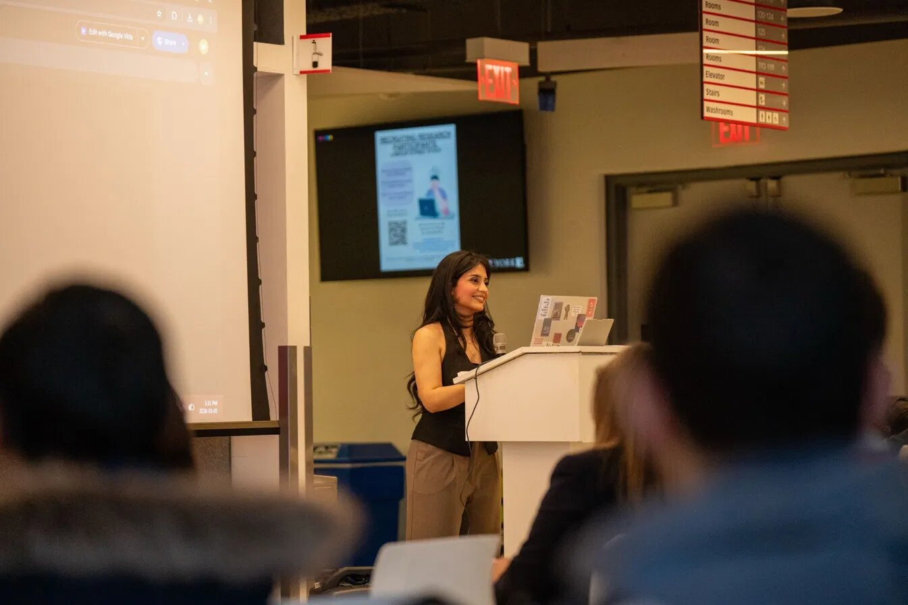
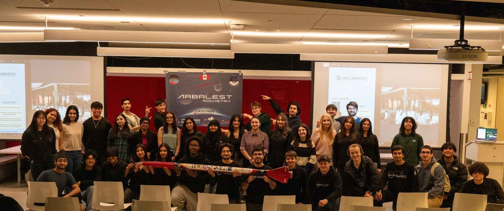
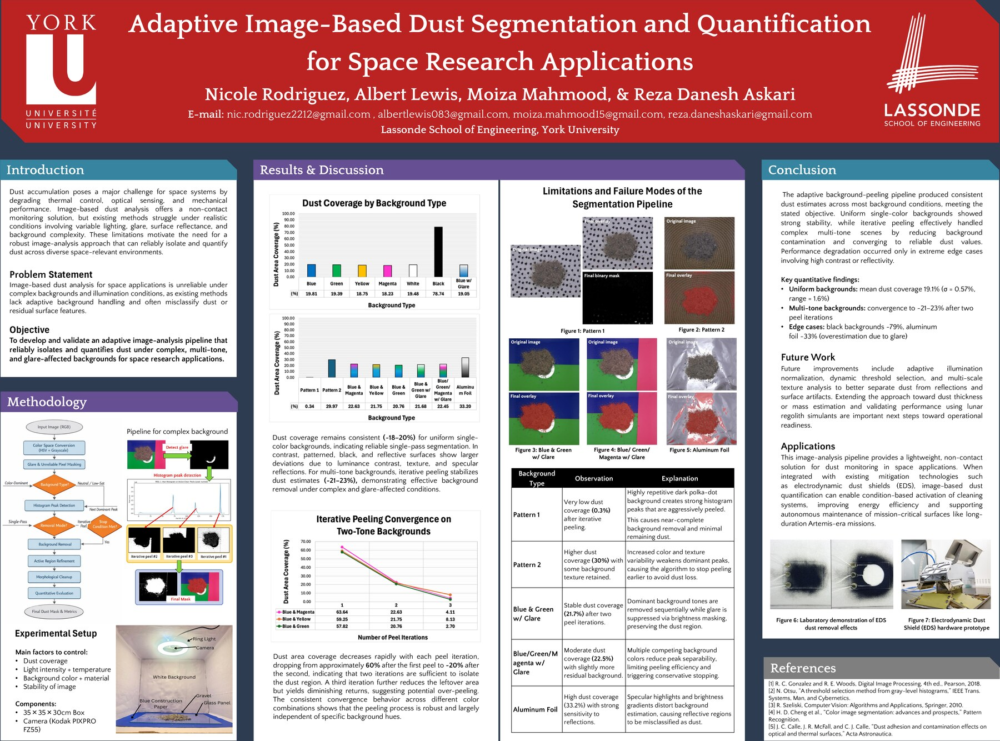
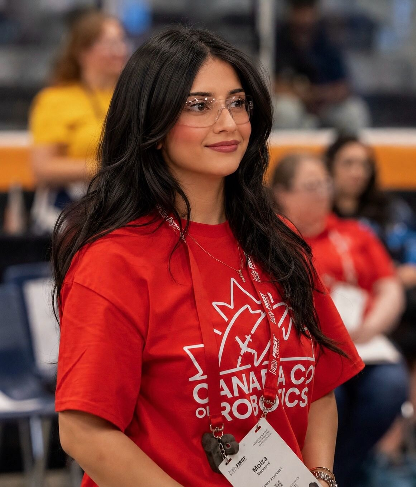
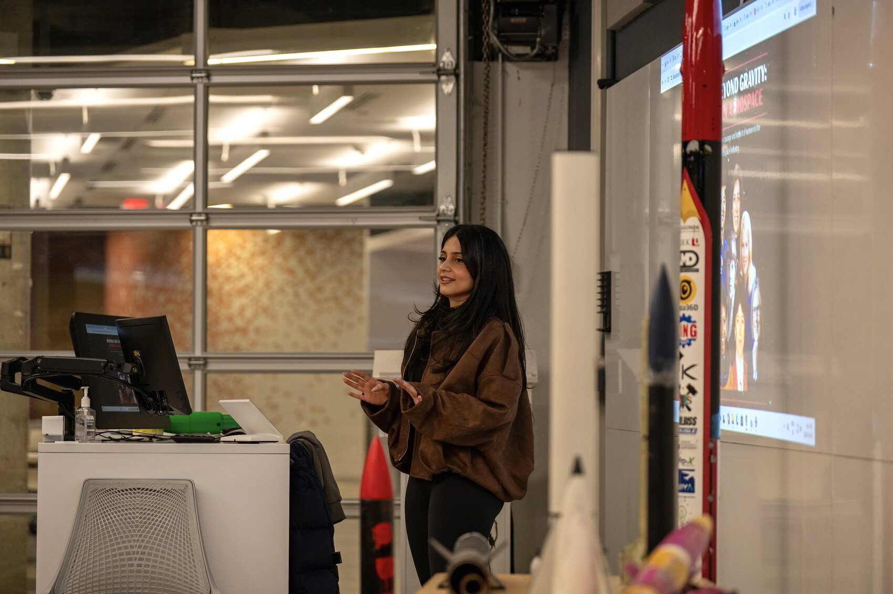
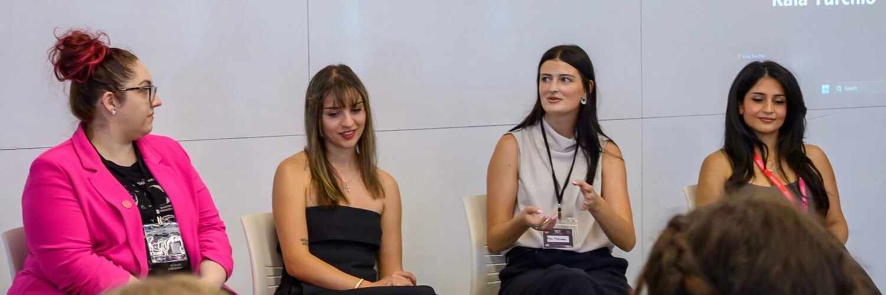
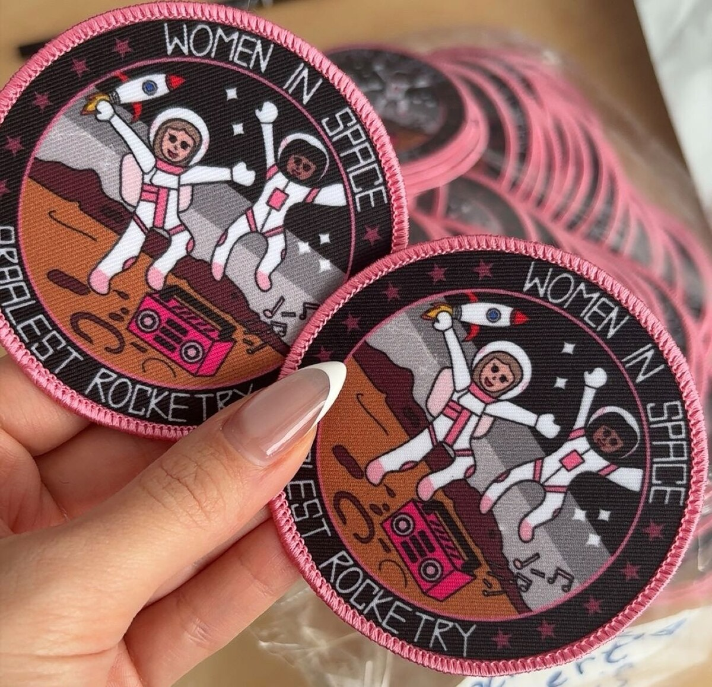
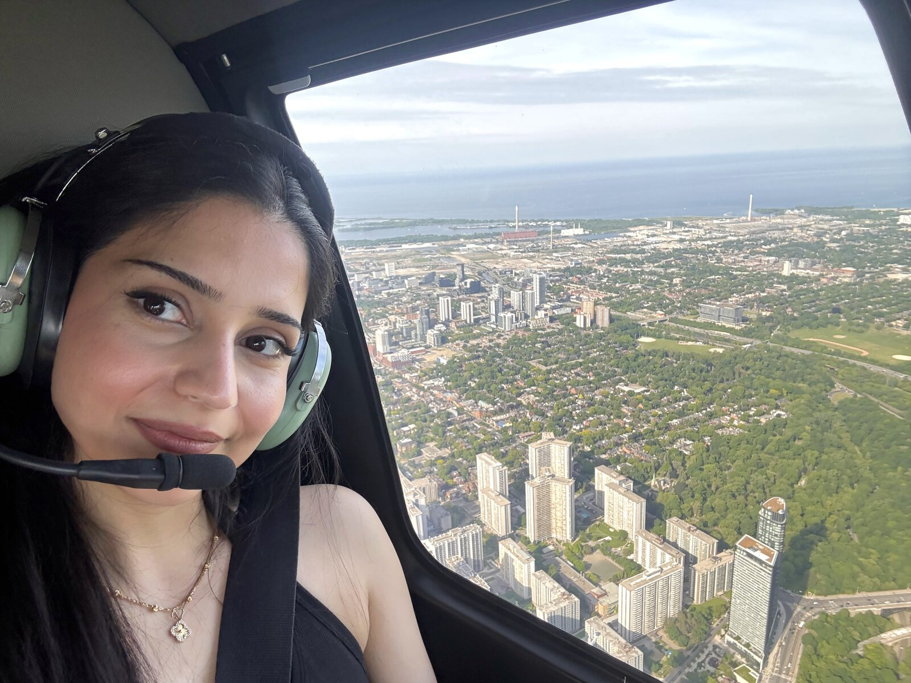

Space Engineering student and aspiring propulsion engineer — I design and build hardware that flies, from rocket payloads and test stands to imaging systems for lunar-dust research. My goal is a career in propulsion, nuclear energy, and human spaceflight.
I'm a Space Engineering student at York University's Lassonde School of Engineering and an aspiring propulsion engineer. I like problems that sit between the physics and the wrench — CAD and analysis on one side, machining and test-stand assembly on the other.
I co-lead Arbalest Rocketry, where I've designed payload thermal hardware, contributed to PCB design, machined flight components, and secured team sponsorship. I've run independent research on lunar-dust mitigation for Artemis-era missions and presented it at the Canadian Space Conference. I hold a prior Engineering Physics degree from Istanbul Technical University, train as a Scientist-Astronaut Candidate with the IIAS, and am working toward my pilot's license.
Alongside the engineering, I work as a medical interpreter across six languages, and I organize outreach like Rising Beyond Gravity to bring more women into aerospace. My long-term goal is to work in propulsion and nuclear energy for spaceflight — and, one day, to fly myself.






Authored an IEEE-cited technical report analyzing the Direct Fusion Drive fusion-reactor concept — evaluating fusion principles and reactor feasibility — and argued it as the most credible near-term path to crewed deep-space missions.
A go/no-go launch simulator that checks weather, temperature, and propellant conditions against safety limits and drives a real-time countdown sequence.
Course grade: A+Co-designed and built a stair-climbing vehicle powered by only two AAA batteries under strict material limits.
1st overall — design & performanceCollected and analyzed radar returns from targets at 1–3 m, comparing how material, shape, distance, and orientation affect the signal.
Processed satellite and image data using matrix operations in Python; integrated a Raspberry Pi with custom circuits for data collection.
Built and debugged circuits and motor drives using oscilloscopes, multimeters, and bench power supplies; measured electromagnetic waves and logged data.

Conceived and organized an outreach event to show students — especially young women — that careers in aerospace are within reach, featuring an industry panel, a hands-on workshop, and a virtual guest from the Canadian Space Agency.

Co-hosted a national conference for students in the space industry with SEDS Canada & York University — managing logistics, venue, and outreach to a standing-room audience — and spoke on the “Getting Involved in Space” panel alongside Mya McKinnon, Kaia Turchio, and Cosette Gilmour, Ph.D.

Represent WIA Canada at aerospace conferences, promoting STEM careers to students and young professionals, and raised $1,800 by designing and selling custom patches for the organization.

I'm always open to connecting with people working in propulsion, nuclear energy, rocketry, and spaceflight — or anyone helping get more people into STEM.